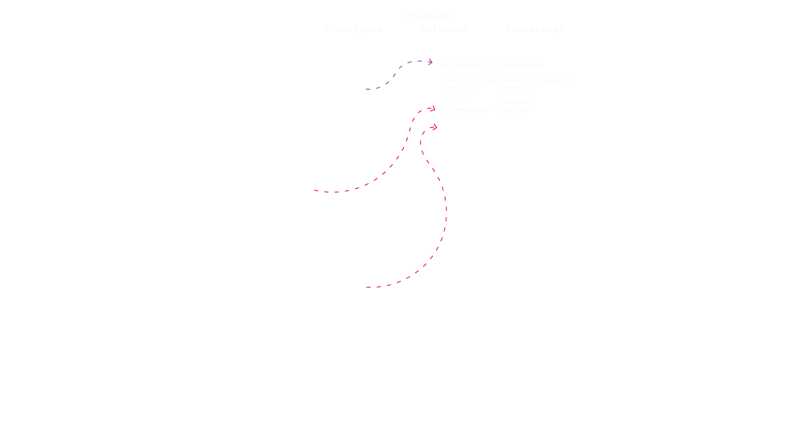
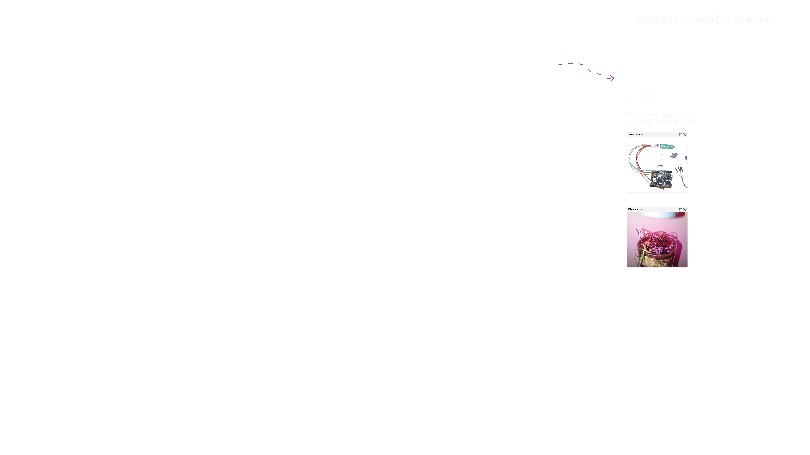
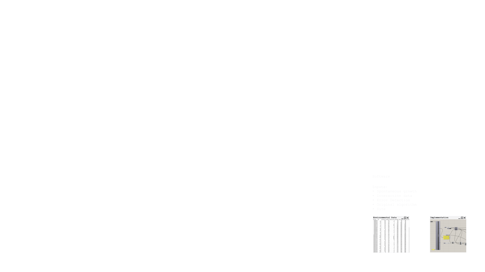
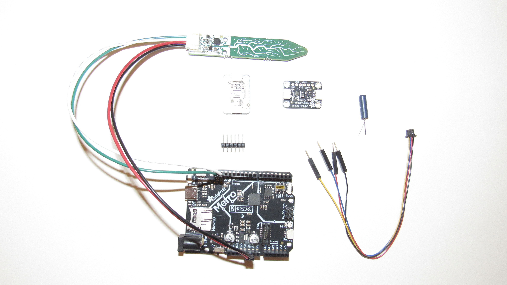
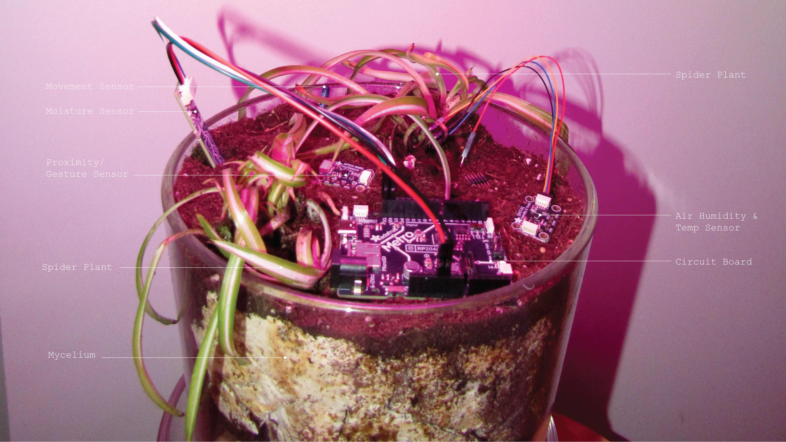
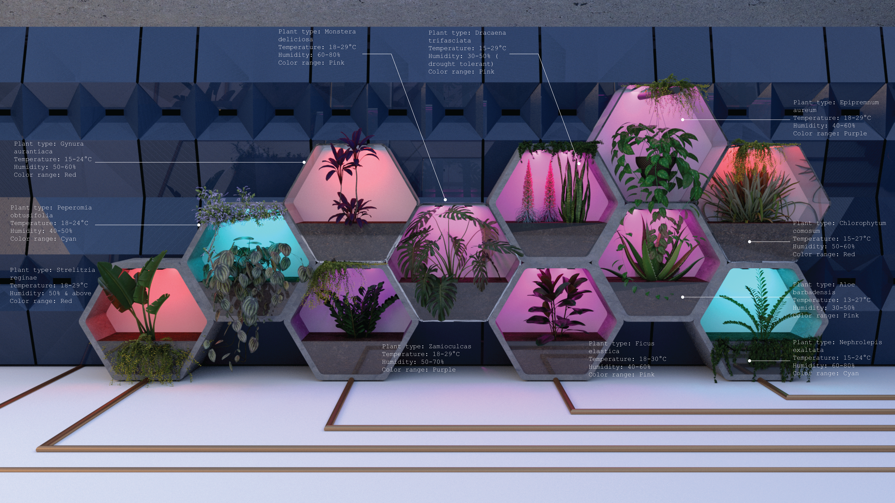
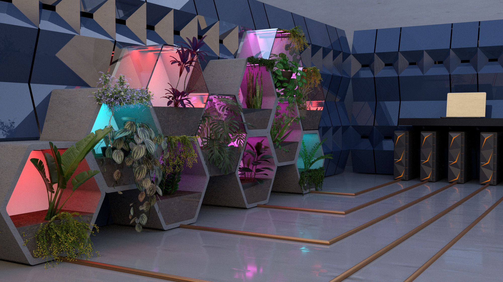
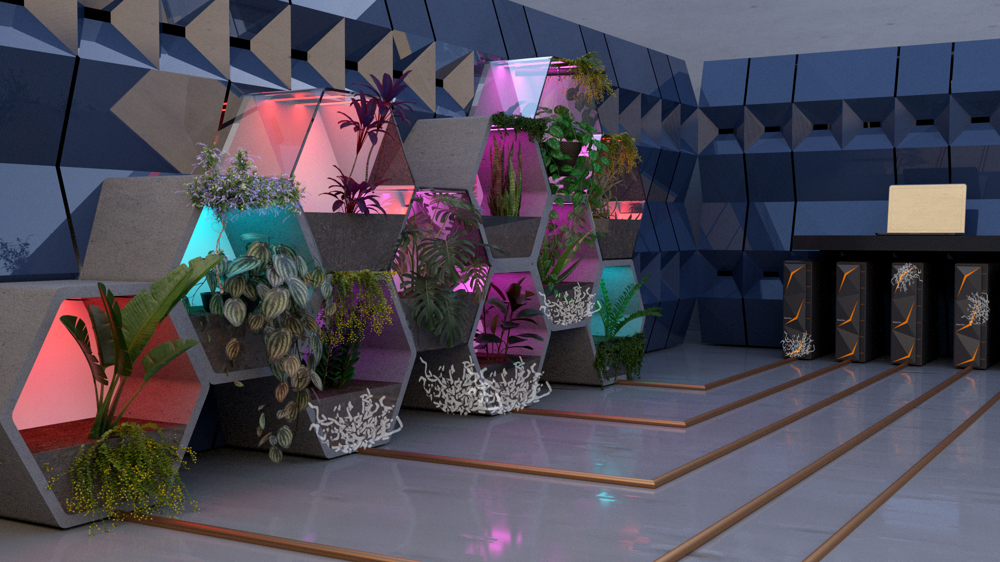
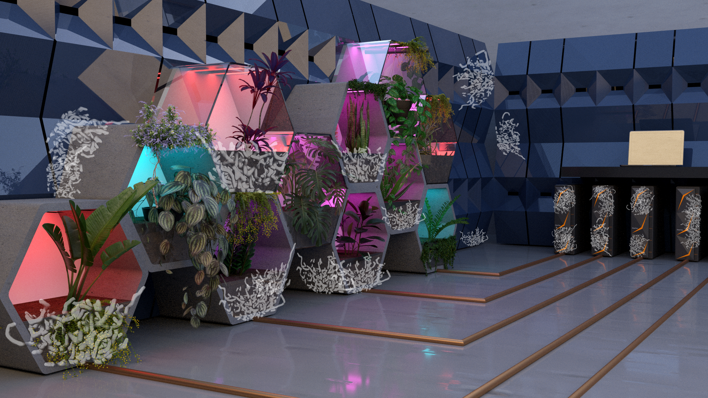

UNCONTROLLED ENVIRONMENTS
This project investigates the hidden computational language of plants and harnesses their signals through morphogenesis algorithms to create programmable living architecture. By establishing symbiotic relationships between biological and technological systems, plants are monitored and guided to grow through and eventually consume their computational scaffolding, transforming circuit boards into substrates for organic expansion. The eventual result is architecture that autonomously grows, self-repairs, and responds to environmental conditions. A few research questions that I am exploring are: How can morphogenesis algorithms inform the design of spaces? How can we adopt a more-than-human perspective in design? What can we learn from natural growth algorithms when it comes to relationships and encounters of natural species? How can we apply these learnings to design? What does failure or overgrowth look like in a closed-loop design system?
SYMBIOTIC SYSTEMS
Relationships, communication, and encounters between non-human elements are at the core of this research. I’m interested in exploring signaling and communication between plants and different elements of nature that we cannot see at a human level. These encounters lay at the intersection point of the natural and the technological, in which they aim to achieve symbiosis. These studies can open up new possibilities for thinking.

This project explores biocomputation—the use of plant components or materials to create physical computing devices. Within this field sits wetware computing, a specific approach that uses organic materials for compute power. I’ll be exploring wetware computing with plants and mycelium through synthetic morphogenesis algorithms. These algorithms can be used to explain certain forms in nature and to program cells to self-organize into specific shapes or structures. In this process, I will experiment with different forms of sensing, visual display, and form finding through natural processes.

Morphogenesis growth algorithms model how biological structures emerge by simulating different factors like chemical signals, cell-to-cell communication, and physical forces. I’m investigating how morphogenesis algorithms influence plant growth by simulating and quantifying how different factors like differential growth and genetic signaling interact to create complex forms. This can help us understand how plants achieve diverse architectures, influenced by their environment. I focused on three morphogenesis algorithms for this project: diffusion-limited aggregation, l-systems, and agent-based systems, all of which can be found in nature. The form of DLA algorithms can closely resemble mycelium. Some parameters of this algorithm include growth control, aggregation and attraction, branching behavior, directional bias, spatial controls, and random variation. L-systems resemble tree branching logic. Existing research validates L-systems' biological relevance: they capture how plant cells can change their state or fate. Agent-based algorithms can be related to the same logic as slime mold. The design of the Tokyo subway system is famously referred to as having a network system that closely resembles the structure of slime mold. Important parameters to note here are food sources, a chemoattractant field, and emitter points.

I’m using a closed-loop system logic for this research, inspired by existing experiments of extracting bioelectronic signals from plants. My experiments begin to take place with these algorithms as inputs. At the next step, their environmental factors can be monitored to determine different forms of interaction. These environmental factors can include moisture, humidity, toxicity, movement, and more. There will also be a so-called “control” experiment that experiences no forced interactions, and therefore can be considered a result of spontaneous ecology. Feedback from both spontaneous and controlled environments will be produced, determining a threshold level, defined as when the sensor readings can trigger certain algorithm changes. This sensor feedback can be represented through response mapping, determining how sensor values translate to growth parameters. The desired outputs of these experiments come in a few different forms. There will be physical prototypes that implement algorithm and plant interaction, renderings that show speculative plant computation, and software methods to transform the real-time sensor data into programs such as grasshopper, using this sensor data as input into the original algorithm in order to understand how plants are responding to their environments. An important part of this experiment will also be the error detection portion of the closed-loop circuit. The error detection can read both naturally and computationally, in terms of overgrowth, mutations, hallucination, or security outage. These error detections are then taken as revised inputs as the loop continues.





CONTROLLED PROTOTYPES
These are some of the sensors used in this experiment, collecting data in forms of soil moisture, air temperature and humidity, proximity, light, and gestures. Plants perform natural computation, not just for adaptation of their changing environments, but also for the sharing of information with other plants of the same species as well as with bacteria and fungi. In fact, plants emerge as social organisms, they have signals that induce a memory that can last, depending on the signal, for hours, days, or even up to years. With plants and mycelium in close proximity, their growth will intertwine and form a communication network.


SENSOR DATA STREAM
The sensors will pick up data similar to these examples, simulating ecosystem dynamics for deeper insights. This brings in the question of controlled vs. uncontrolled environments. Controlled environments will receive optimized light, moisture, and temperature in order for the plants to thrive. The uncontrolled environments might resemble a site that is outdoors or naturally occurring, something that is unpredictable; a situation in which the sensors may not receive consistent feedback, making it more difficult for consistent data to be collected. This brings us to a point of adaptive complexity. In uncontrolled environments, algorithms must constantly calibrate, mutations and unexpected growth patterns may occur. It is only in this way that we can truly learn from nature. We can only control these systems up to a certain point, and the aim of these experiments is to give the plants a healthy baseline for these dynamic, uncontrolled aspects to take place and thrive.
SPECULATIVE ENVIRONMENTS
The environments are set up with different plant types that are low-maintenance, easy to grow and prefer warmer temperatures. At the prototype level, we can monitor individual plants with dedicated sensors and provide localized interventions. But what happens when we scale this logic to building-wide systems- or even urban networks? In this speculative environment, the closed loop circuit exists between the plant experiments and a data center. Through wetware computing, the plants are producing compute power, and the data center is giving off heat which will be absorbed by the plants, adding to their optimal environmental conditions and creating a symbiotic relationship between the plants and the data center.




Monitored for optimal environmental conditions for the plants to thrive, they will eventually grow out of the original structures and onto the computers. Overgrowth & breaking down or decomposing of circuit boards is encouraged. The natural networks can eat the circuit board as a food source and ultimately become the computer. The potential to apply this logic at a larger scale can introduce new questions: Can a single morphogenesis algorithm govern an entire facade? Do we need a hierarchical system where building-level algorithms coordinate local plant-level responses? At the prototype scale, I’m still the designer - I set parameters, I intervene. But at the building or urban scale, the system must become autonomous. At what point does the architecture design itself? At what scale does control become impossible?

LIVING ARCHITECTURES
Scaling these prototype experiments reveals the potential for living architecture—structures that grow, self-repair, and respond autonomously to environmental conditions, creating structures that behave more like living organisms. Buildings could potentially grow and assemble themselves from genetically programmed biological building blocks. The architecture becomes a living organism—sensing environmental changes through its distributed network of plants and mycelium, adapting its form through feedback loops, and regenerating damaged components through organic growth. The circuit boards and computational scaffolding that initially guide growth eventually become substrate, consumed and replaced by the biological systems they once controlled.

BIBLIOGRAPHY
Existing Projects
Certain Measures. (n.d.). Nursery. https://www.certainmeasures.com/projects/nursery
Data Garden. (n.d.). Grow Your Own Cloud. https://growyourown.cloud/data-garden/
Dataland. (n.d.). Large Nature Model. https://dataland.art/about/large-nature-model
Marshmallow Laser Feast. (n.d.). Sanctuary of the Unseen Forest. https://marshmallowlaserfeast.com/project/sanctuary-of-the-unseen-forest/
MIT Media Lab. (n.d.). Cyborg Botany. https://www.media.mit.edu/projects/cyborg-botany/overview/
MIT Media Lab. (n.d.). Elowan: A Plant-Robot Hybrid. https://www.media.mit.edu/projects/elowan-a-plant-robot-hybrid/overview/
Oxman. (n.d.). Man-Nahata. https://oxman.com/projects/man-nahata
Research
Adamatzky, A., Harding, S., Erokhin, V., Mayne, R., Gizzie, N., Baluška, F., Mancuso, S., & Sirakoulis, G. C. (2018). Computers from Plants We Never Made: Speculations. In S. Stepney & A. Adamatzky (Eds.), Inspired by Nature (pp. 357-387). Springer International Publishing. https://doi.org/10.1007/978-3-319-67997-6_17
Foresight Institute. (n.d.). Gizem Gumuskaya: Synthetic Morphogenesis—Self-Constructing Living Architectures by Design. https://foresight.org/resource/gizem-gumuskaya-synthetic-morphogenesis-self-constructing-living-architectures-by-design/
Lawrence Berkeley National Laboratory. (2024). Berkeley Lab Researchers Advance AI-Driven Plant Root Analysis. https://cs.lbl.gov/news-and-events/news/2024/berkeley-lab-researchers-advance-ai-driven-plant-root-analysis/
Runions, A., Lane, B., & Prusinkiewicz, P. (2007). Modeling Trees with a Space Colonization Algorithm. Eurographics Workshop on Natural Phenomena 2007, 1-10.
Tompris, I., Chatzipaschalis, I. K., Chatzinikolaou, T. P., Kleitsiotis, G., Tsakalos, K.-A., Fyrigos, I.-A., Tsompanas, M.-A., Adamatzky, A., Ayres, P., & Sirakoulis, G. C. (2025). Mycelium as a computational medium: A framework for growth modeling towards reservoir computing. Natural Computing. https://doi.org/10.1007/s11047-025-10040-x
Veenstra, F., Faíña, A., Stoy, K., & Risi, S. (2016). Generating Artificial Plant Morphologies for Function and Aesthetics through Evolving L-Systems. Artificial Life Conference Proceedings, 28, 692-699. arXiv:1702.08889
Programming
The Different Design. (n.d.). https://thedifferentdesign.com/